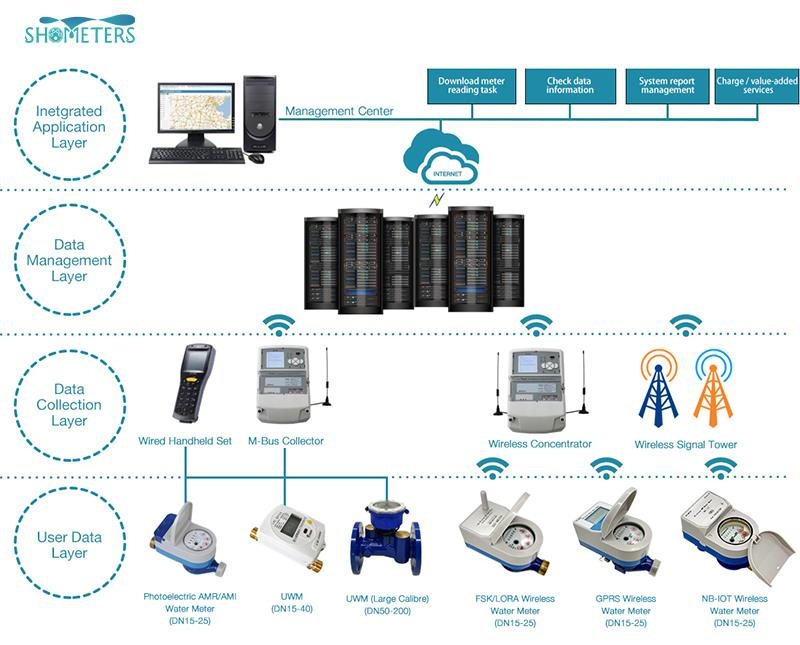
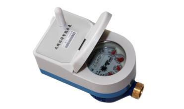
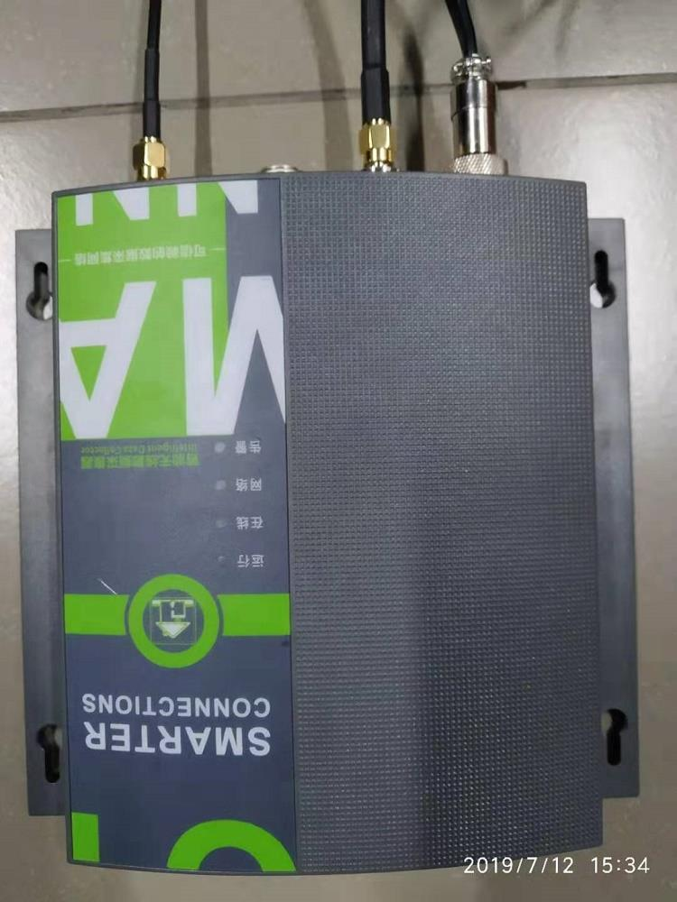

E-mail:
info@sh-meters.comCall Us:
+86 13131984716LoRa wireless water meter adopts advanced wireless transmission technology, which transforms information of conventional mechanical water meter into electrical signal that stored by micro-electronics control circuit.
LoRa wireless water meter adopts advanced wireless transmission technology, which transforms information of conventional mechanical water meter into electrical signal that stored by micro-electronics control circuit. It is able to automatically read the metering data via wireless remote network and control the close and open of the valve.

Technologies Applied
◆ Battery life 6 years
◆ Star network structure, small delay, long transmission distance
◆ With valve control
◆ 1.0MPA, IP68
◆ Transmit distance 1000m
◆ Band OEM

| Technical Parameters | ||||
Item | Unit | Details | ||
Nominal diameter | mm | 15 | 20 | 25 |
Measuring range (Q3/Q1) | 80 | |||
Overload flow (Q4) | mm³/h | 3.125 | 5 | 7.875 |
Nominal flow (Q3) | 3.125 | 4 | 6.3 | |
Transitional flow (Q2) | 2.5 | 0.08 | 0.13 | |
Minimum flow (Q1) | 0.05 | 0.05 | 0.08 | |
Accuracy class | Class 2 | |||
Temperature class | T30/T50/T90 | |||
Pressure class | MAP10 | |||
Pressure loss class | △p63 | |||
Flow profile sensitivity class | U10/D5 | |||
Environmental class | Class B | |||
Electromagn. class | E1 | |||
Static current | uA | ＜10 | ||
Power Supply | 2.8 V-3.6 V |
Transmit Power | 50 mW |
Sleep Current | 2.5 uA |
Average Current | 20uA |
Transmission Distance | 1000 m (Good situation) |
Working temperature | -10℃～55℃ |
GPRS DATA
The Data concentrator (LoRa) consists of three parts: DTU (GPRS), control board and LoRa module The function of collecting, storing and transmitting LoRa wireless water meter data is realized.
It mainly used in the remote meter reading and data analytics and processing, the data concentrator achieves the functionalities reading of LoRa wireless water meters,the data remote transmission.



 Intelligent GPRS Automatic Cold Water Meter
Intelligent GPRS Automatic Cold Water Meter LoRa Remote Wireless Reading Dry Dial Household Wate...
LoRa Remote Wireless Reading Dry Dial Household Wate... Digital Prepaid Water Meter System Installation
Digital Prepaid Water Meter System Installation Pipe Pressure Test Ultrasonic Water Flow Meter
Pipe Pressure Test Ultrasonic Water Flow Meter